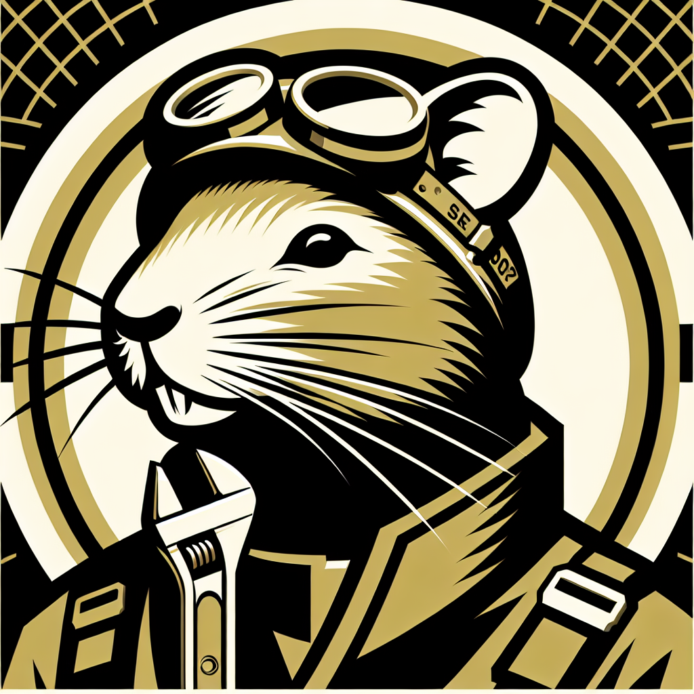

Ratropolis’ Unseen Heroes: The Life of Sewer Guardians
Every day, an unseen force labors tirelessly to keep Ratropolis running smoothly: the Sewer Guardians. These brave rats, who risk their lives to maintain the city's intricate sewer networks, are unsung heroes protecting Ratopolis from potential disasters.

Operating beneath the bustling metropolis, the Sewer Guardians undertake early morning inspections, fix leaks, clear blockages, and strengthen frail structures. Their specialized tools and unfaltering teamwork are vital in navigating the hazardous sewer systems lurking below.
Hazardous conditions are a constant challenge. Toxic waste, precarious ceilings, and the mental strain of working in confined spaces make their job perilous. "It’s not easy working down here," shared veteran Guardian, Grimsy Tails. "You have to stay sharp. One wrong move, and it could be your last."
The impact of their work is vast yet unseen. By preventing major flooding and infrastructure failures, they protect public health and ensure economic stability. "Without the Sewer Guardians, my cheese shop would be flooded every rainy season," remarked local business owner, Cheddar Whiskers. "They’re the unsung heroes of Ratropolis!"
Despite their crucial role, the Sewer Guardians face significant challenges. Long hours in dark, damp environments take a physical and mental toll. "It's grueling work," confessed Wanda Whisk, a new recruit. "But knowing we prevent disasters keeps us going."
Their vital contributions often go unnoticed. City planner Squeaky Clean emphasized, "Their work might be out of sight, but it’s certainly not out of mind. The Sewer Guardians are the true champions of our city's infrastructure."
The role of the Sewer Guardians dates back to the city's formative years. Initially a small group, they've grown in number and skill, thanks to rigorous training and technological advancements. But they need continued support from the city and its residents.
The future holds promise with upcoming projects and innovations aimed at enhancing their efficiency and safety. This includes improved tools and advanced training programs, reflecting the city's commitment to supporting these essential workers.
Ratty McCheese, a lifelong resident, voiced a common sentiment, "I never realized how much we owe to the Sewer Guardians. They work tirelessly so we can live comfortably."
As Ratopolis thrives on their silent vigil, it’s high time we acknowledge and support these unseen heroes. Their dedication and hard work ensure that above ground, life can flourish uninterrupted. Next time you walk the cobblestone streets, remember the Sewer Guardians and the invaluable service they provide, often at great personal risk.
Our city's future depends on their resilience and determination. Supporting them means a safer, more robust Ratopolis for all. Let's not forget those who toil in the shadows so we can bask in the light.